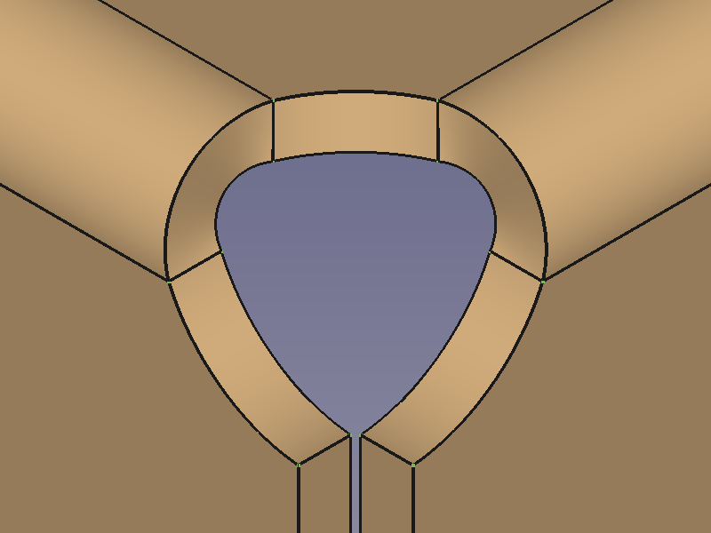
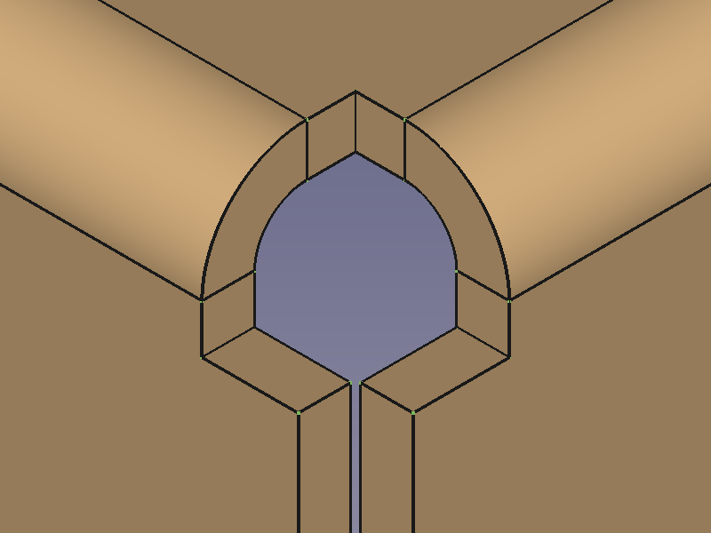
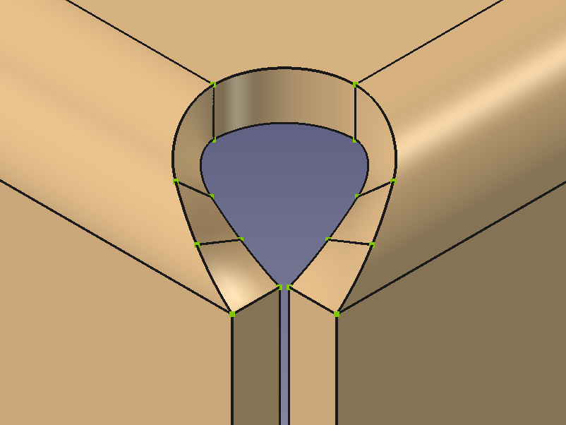
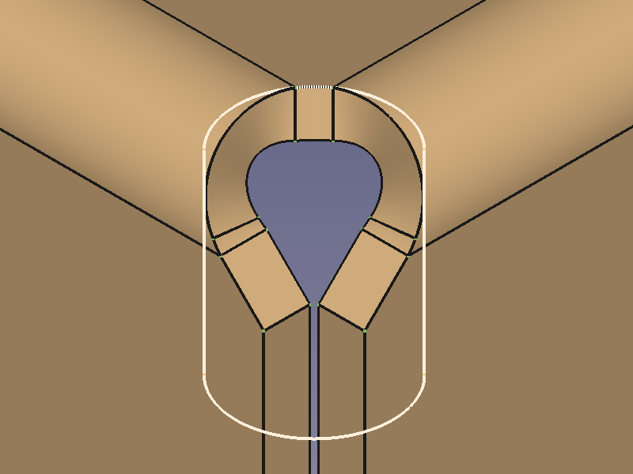
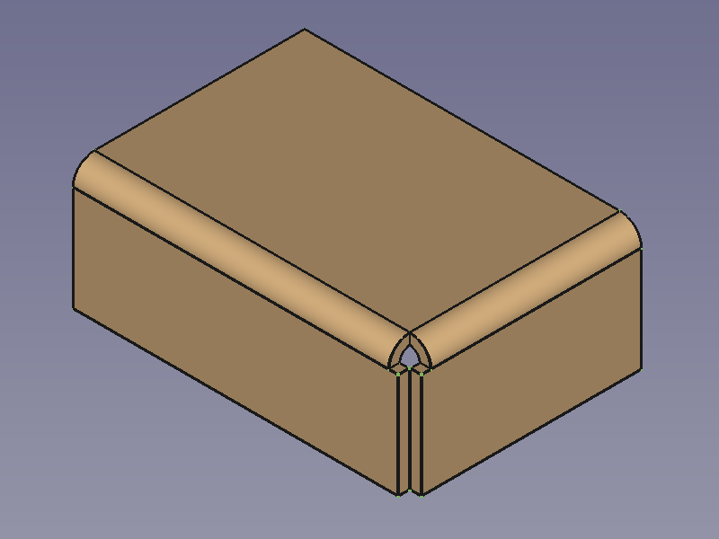
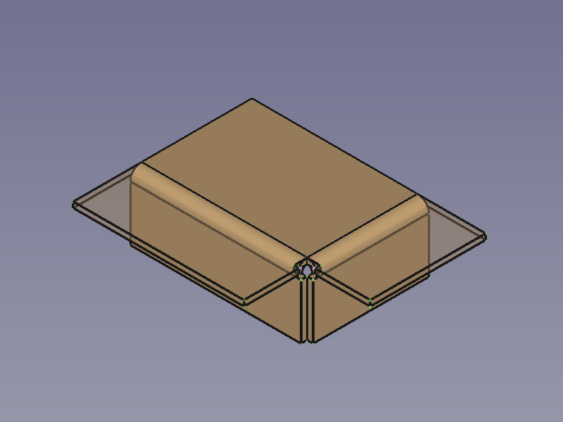
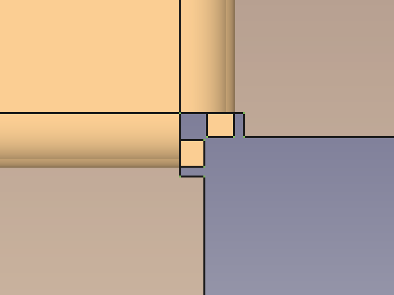

SheetMetal AddCornerRelief/it
This documentation is not finished. Please help and contribute documentation.
GuiCommand model explains how commands should be documented. Browse Category:UnfinishedDocu to see more incomplete pages like this one. See Category:Command Reference for all commands.
See WikiPages to learn about editing the wiki pages, and go to Help FreeCAD to learn about other ways in which you can contribute.
|
|
| Menu location |
|---|
| SheetMetal → Add Corner Relief |
| Workbenches |
| SheetMetal |
| Default shortcut |
| C R |
| Introduced in version |
| - |
| See also |
| None |
Description
The  SheetMetal AddCornerRelief command adds a corner relief. A relief is usually created at corners where two bends meet, but the command can also create a relief at an open corner.
SheetMetal AddCornerRelief command adds a corner relief. A relief is usually created at corners where two bends meet, but the command can also create a relief at an open corner.
The command can only create one relief at a time.
{kind=link}
{kind=link}
Default corner of two bends → Corner with added corner relief
{kind=link}
{kind=link}
Default open corner → Open corner with added corner relief
Usage
- Select two edges of a corner.
- There are several ways to invoke the command:
- Press the
 Add Corner Relief button.
Add Corner Relief button. - Select the SheetMetal → Add Corner Relief option from the menu.
- Right-click in the Tree View or the 3D View and select the Sheet Metal → Add Corner Relief option from the context menu.
- Use the keyboard shortcut: C then R.
- Press the
- A CornerRelief object is created and the Corner relief properties Task Panel opens (introduced in version 0.5.00).
- A new corner relief is added at the selected corner.
- Optionally press the Select button to reselect the edges.
- Press the Preview button to finish the selection and display the changes.
- Optionally re-select one of the Relief Type radio buttons:
- The Circular radio button creates a round relief cutout.
- The Square radio button creates a square relief cutout.
- The Weld radio button creates a round relief cutout that does not extend beyond the bends. (introduced in version 0.8.23)
- The Sketch radio button creates a cutout based on a sketch.
- Press the Sketch button to select the sketch.
- Optionally adjust the X offset and Y offset parameters.
- Optionally toggle the Relief Size radio buttons:
- Select Absolute and enter the Relief Size in mm.
- Select Relative and enter the Scale Factor.
- Optionally adjust the K-Factor.
- Press the OK button to finish the command and close the Task Panel.
- Optionally adjust the parameters in the Property View.
Task Panel
A task panel was introduced in version 0.5.00
Double-click an existing CornerRelief object in the Tree View to re-open the task panel and edit the parameters.
{kind=link}
- Select: Stores links to selected edges in the base Object property.
- Relief Type radio buttons in connection with Relief Size radio buttons set the DatiRelief Sketch property:
- Circular + Absolute →
Circle; Circular + Relative →Circle-Scaled. - Square + Absolute →
Square; Square + Relative →Circle-Scaled. - Weld + Absolute →
Weld; Weld + Relative →Weld-Scaled. (introduced in version 0.8.23) - Sketch →
Sketch.
- Circular + Absolute →
- If the Sketch radio button is selected the following additional options are displayed in the Relief Type section:
- Sketch: Stores a link to selected sketch in the DatiSketch property.
- X Offset: Sets the DatiXOffset property.
- Y Offset: Sets the DatiYOffset property.
- If the Absolute radio button is selected:
- Relief Size: Sets the DatiSize property.
- If the Relative radio button is selected:
- Scale Factor: Sets the DatiSize Ratio property.
- K Factor: Sets the Datikfactor property.
Relief shapes
The shape of a corner relief can be altered by changing its property values:
The value of the property DatiReliefSketch can be chosen from a list: Circle (default), Circle-Scaled, Square, Square-Scaled, Weld, Weld-Scaled, Sketch.
Circle,Square, andWeld(introduced in version 0.8.23) use the value of the property DatiSize to scale the relief.Circle-Scaled,Square-Scaled, andWeld-Scaled(introduced in version 0.8.23) use the value of the property DatiSize Ratio to scale the relief.Sketchactivates the use of the sketch listed in the property DatiSketch to define the relief shape.
   


{kind=link}
{kind=link}
{kind=link}
{kind=link}
Circular relief (default settings) → Square relief (default settings) → Weld relief (default settings) → Sketch based relief
Note that the Weld relief does not extend beyond the bend.
A closer look at relief sizes
To get an idea how and where the relief is placed we unfold a default corner without a relief.
  

{kind=link}
{kind=link}
{kind=link}
Default corner of two bends → Corner with unfold solid → Corner in top view
The next step is to open the unfold sketch, create a circle through 3 points and add a radius dimension.
Now we add a corner relief, create the corresponding unfold solid and open the first unfold sketch again.
Adding a concentric circle of 3 mm radius reveals that we have found out how the internal circle is positioned as the new circle fits perfectly into the cut-out of the relief's unfold solid.
{kind=link}
{kind=link}
Default corner with unfold sketch → Corner with default relief and the same unfold sketch
Trying to set the property DatiSize to a value below the determined 1,67 mm will result in an error; any value above should work fine.
Switching to Circle-Scaled and creating another unfold solid shows that 1,67 mm is the base for the property DatiSize Ratio, too.
Notes
- The k factor defines where within the thickness of a sheet the neutral axis is located according to the ANSI standard.
- The selection accepts more than two edges, but only the first two edges are taken into account.
Properties
See also: Property View.
A SheetMetal CornerRelief object is derived from a Part Feature object or, if it is inside a PartDesign Body, from a PartDesign Feature object, and inherits all its properties. It also has the following additional properties:
Data
Parameters
- DatiReliefSketch (
Enumeration): "Corner Relief Type".Circle(default),Circle-Scaled,Square,Square-Scaled,Weld,Weld-Scaled,Sketch. - DatiSize (
Length): "Size of Shape". Default:3,00 mm. - DatiSize Ratio (
Float): "Size Ratio of Shape". Default:1,50. - Datibase Object (
LinkSub): "Base Object". Links to the pair of edges defining the Corner Relief position. - Datikfactor (
FloatConstraint): "Neutral Axis Position". Default:0,50.
Parameters1
- DatiSketch (
Link): "Corner Relief Sketch". - DatiXOffset (
Distance): "Gap from side one". Default:0,00 mm. - DatiYOffset (
Distance): "Gap from side two". Default:0,00 mm.